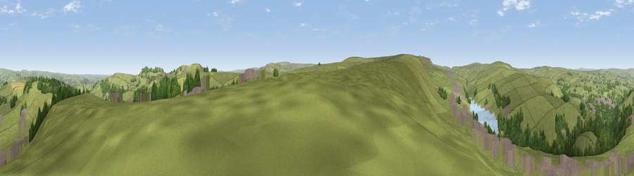

Viewpoint near Ripponden
#18606 in England · top 31% of its area beats it · near RippondenThe view, rendered

A 360° render of this exact spot computed from the terrain model, tree cover and land cover — summer colours, afternoon light, calibrated against photographs of famous viewpoints. Real trees, hedges and buildings will differ in detail.
The panorama
Grey silhouette: terrain skyline in each direction (720 bearings, Earth curvature and refraction included). Dashed green: skyline with trees (+15 m) and buildings (+8 m) as obstacles. Blue strip: how far the ground is visible on each bearing.
Where the view opens
Wedge length = distance to the farthest visible ground on that bearing (vegetation-aware). Rings at 10, 25 and 50 km.
What fills the view
81% grassland · 10% woodland · 7% built-up · 1% water
Angular shares of the visible panorama (visual magnitude), not map area. Landscape diversity 0.30 (0–1 Shannon).
Key numbers
More beautiful places nearby
The staircase of upgrades: each row has a higher view potential than everything closer. Driving times are estimates from straight-line distance, calibrated against real road routing — check an actual route before setting out.
| Place | Direction | Drive | Score |
|---|---|---|---|
| Viewpoint near Ripponden | SW · 1 km | ~3 min | 54.9 |
| Worts Hill | ESE · 2 km | ~5 min | 64.5 |
| Wholestone Moor | E · 4 km | ~9 min | 66.4 |
| Viewpoint near Marsden | SSE · 6 km | ~13 min | 68.3 |
| Viewpoint near Marsden | SSE · 6 km | ~13 min | 71.0 |
| Viewpoint near Shaw | SW · 12 km | ~22 min | 72.9 |
| Viewpoint near Greenfield | SSW · 14 km | ~25 min | 76.0 |
| Viewpoint near Carrbrook | SSW · 17 km | ~30 min | 77.1 |
53.64252, -1.93984 · source: screening · position refined by local search. Computed location — check access rights before visiting.